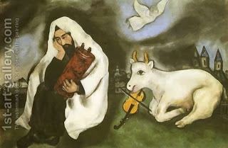

Yoma 2 - Staying alone
Seven days before Yom Kippur they take the High Priest away from his house and from his wife and lead him to the Chamber of Parhedrin, where he will spend the next seven days in solitude and in preparation for the service.
Since all of the services of Yom Kippur will be done by him, and they are kosher only if performed by a High Priest, this additional measure of separation was required, to prevent even an unlikely possibility of him becoming ritually impure for the service.
There was yet another event in the life of a High Priest when a seven-day separation was required, and that was before burning of the Red Heifer, to provide ashes for the purification from a dead body. Both had their source in the Torah and were connected to the initial consecration of the Levites for the services, when they likewise spent seven days near the Tabernacle, separated from the rest . Back then the Levites did it "to do" "atonement:" For the future, "to do" refers to the Red Heifer, and "atonement" to Yom Kippur.
Art: Solitude by Marc Chagall